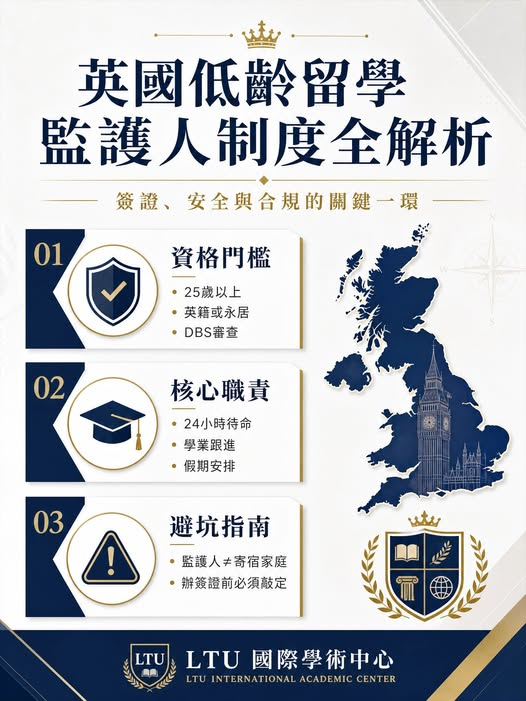

《看懂制度，選對世界》第一集
英國低齡留學監護人制度全解析
英國低齡留學監護人制度全解析：簽證、安全與合規的關鍵一環 隨著英國低齡留學的趨勢愈發明顯，越來越多台灣孩子在國中、高中階段就遠赴英倫求學。家長在

英國低齡留學監護人制度全解析：簽證、安全與合規的關鍵一環 隨著英國低齡留學的趨勢愈發明顯，越來越多台灣孩子在國中、高中階段就遠赴英倫求學。家長在
隨著英國低齡留學的趨勢愈發明顯，越來越多台灣孩子在國中、高中階段就遠赴英倫求學。家長在台灣牽腸掛肚，但在實際操作中，卻往往忽略了英國法律中極其剛性的一環：未滿 18 歲的留學生，必須擁有合法的「監護人（Guardian）」。切記：英國留學的法定監護人，絕非學校檔案裡一個簡單的緊急聯絡人。在英國的教育體系裡，監護人是代替遠在台灣的父母，行使在英合法權益與保護義務的「法定代理人」。LTU 國際學術中心長期協助台灣家庭規劃英國升學路徑，今天就從英國的底線標準出發，把監護人制度完整拆解。
一、門檻極其嚴苛：什麼人有資格當監護人？很多家長存在普遍誤區：請在英國讀研、工作的親友幫忙做孩子的監護人。這種方式完全不合規，並不被英國法律及私校體系認可。英國對法定監護人有著嚴格的篩選標準： 年齡與身份門檻：必須年滿 25 歲以上（部分嚴格的私校甚至要求 30 歲以上），並須持有英國國籍、或具備永久合法工作身份的英國居民，且擁有固定居所。背景審查門檻：監護人必須身體健康、信譽良好，並須通過英國國家無犯罪記錄審查（DBS 查核），這是保障未成年學生人身安全的底線要求。二、深度權責：合規的監護人平時都在做什麼？
正規監護人絕非「出事才出面」的應急角色，而是串聯學校、學生與台灣家長的核心紐帶，日常權責貫穿求學全程： - 24 小時待命：保持與學校的緊密聯繫，應對突發狀況；緊急情況下代表父母處理事務並簽署同意書。- 學業與心理雙重支持：協助跟進孩子的學業進度，必要時提供課外輔導與心理疏導資源。- 假期閉環管理：負責上下校交通或假期接送機安排，並安排合規的寄宿家庭（Homestay），覆蓋週末與長短假期的住宿與生活需求。三、最容易踩的三個認知誤區 誤區一：監護人＝寄宿家庭？完全不同。
寄宿家庭僅負責孩子週末或假期的食宿起居；監護人則是全面照顧生活、學業與法律責任的「全權代表」，會將孩子妥善安置到合規的寄宿家庭中。誤區二：未滿 18 歲可以自己租房、住飯店？違規。英國法律與絕大多數私校明確規定，嚴格禁止未滿 18 歲的學生獨自租房或入住飯店、民宿，一旦違規將面臨嚴重處分甚至退學。誤區三：拿到 Offer 再找監護人？為時已晚。尋找監護人的工作，從開始規劃留學時就該啟動。最晚的時間點是：在辦理英國學生簽證之前，必須敲定合規監護人。簽證官若看不到合法監護證明，簽證將直接被拒。
四、如何挑選靠譜的監護資源？對於台灣沒有直系親屬在英國的家庭，借助專業監護資源是務實的解法。建議鎖定以下幾項評選標準： - 監護人與合作對象均須通過 DBS 查核，並遵循英國當地的監護標準與規範。- 具備完善的服務網絡與雙語支持，能對接學校與家長，消除溝通落差。- 擁有嚴選的短托家庭庫，能為 18 歲以下留學生提供安全可靠的假期寄宿安排。- 服務涵蓋簽證所需文件協助，能配合簽證審核時程提前完成監護安排。
了解英國監護制度的嚴苛規則與常見誤區之後，許多家長仍會陷入選擇難題：個人熟人監護不合規、市面機構資質參差不齐、服務品質難以兼顧法律合規、孩子安全與學業成長等多重需求。LTU 國際學術中心 英國監護服務 對於未成年赴英留學生而言，選擇一個合規、專業、可信賴的監護資源，是順利完成英倫求學之旅的重要基石。
LTU 國際學術中心長期協助台灣學生申請英國升學（含 UWE Bristol 等合作院校），熟悉當地法規政策與私校體系，所提供之監護服務遵循英國監護標準，合作監護人均通過 DBS 查核，從源頭協助家庭規避合規風險，並提供監護手續協助、生活照料對接、學業跟進等支援。定制監護方案（依學生需求調整） - - - 核心服務特色 - - - - -
想了解更多英國低齡留學監護安排，或規劃孩子的英倫升學路徑，歡迎前往 www.ltuedu.net 洽詢 LTU 國際學術中心顧問團隊。